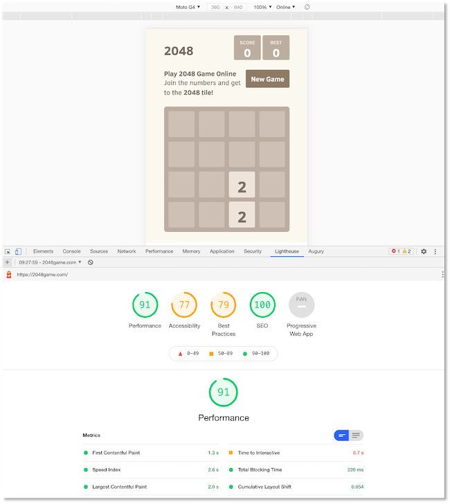
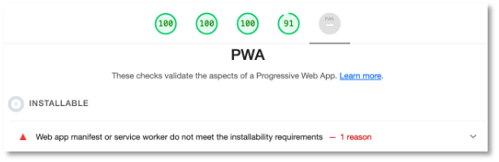

Einführung¶
In diesem Semester geht es um Progressive Web Apps (PWA). PWA sind Funktionen, die wir Webanwendungen hinzufügen können, um sie in ihrer Funktionalität zu erweitern. Die so werweiterten Webanwendungen kommen mit solchen Funktionen nativen Apps immer näher, d.h. das Look and Feel gleicht sich mit PWAs nativen Apps an. Dazu gehören Funktionalitäten, wie z.B.
- die Möglichkeit, die Webanwendung auch offline zu verwenden,
- die Kamera zu nutzen,
- den eigenen Standort zu verwenden,
- Daten im Hintergrund zu synchronisieren.
Das bedeutet aber nicht automatisch, dass wir ausschließlich auf moderne Browser angewiesen sind, die diese Funktionalitäten von PWAs unterstützen. Die Webanwendungen sollen auch weiterhin auf alten Webbrowsern laufen, dann jedoch eventuell ohne einige oder alle PWA-Funktionalitäten.
Progressive Web Apps müssen
- zuverlässig (reliable) sein, d.h. sie müssen schnelle Ladezeiten aufweisen und sogar (teilweise) offline funktionieren,
- schnell sein, d.h. schnell auf Nutzerinteraktionen reagieren,
- motivierend sein, die Webanwendung zu verwenden, d.h. einerseits intuitiv bedienbar und anderseits, z.B. über Push-Notifikationen, die Nutzerinnen animieren, die App zu nutzen.
Die prinzipielle Idee einer Progressive Web App lässt sich vereinfacht durch die folgenden Abbildung veranschaulichen:
Eine Progressive Web App ist eine Webanwendung, die sich wie eine native mobile App verhält.
Webanwendungen vs. native Apps¶
Die meisten Nutzerinnen verwenden die meiste Zeit native Apps auf ihrem Smartphone. Nur zu einem geringen Prozentsatz werden Web-Anwendungen (also der Browser) auf dem Smartphone verwendet. Das spricht eigentlich eher dafür, dass wir uns mit der Entwicklung nativer Apps beschäftigen sollten, als mit der Entwicklung von (mobilen) Webanwendungen. Die vorrangige Verwendung nativer Apps hat mehrere Gründe:
- Push-Notifikationen: Native Apps laufen im Hintergrund und die Nutzerinnen werden über Push-Notifikationen informiert, wenn etwas Neues passiert ist, z.B. neue Nachrichten , E-Mails, etc. Man muss also gar nicht aktiv die native App bedienen, um über Aktuelles informiert zu werden.
- App-Icons auf dem Home-Bildschirm: ermöglichen einen schnellen, direkten Zugang zu den Apps.
- Gerätefunktionen: wie z.B. Standortermittlung, Kameras und Mikrofine können leicht in native Apps eingebaut werden. Für Webanwendungen ist dies nur aufwändig möglich.
- Offline-Funktionalitäten: viele native Apps können auch offline ganz oder teilweise verwendet werden, z.B. Spiele oder Musikapps, die heruntergeladene Musik abspielen.
App-Icons auf dem Home-Bildschirm können wir auch für Links auf unsere Webanwendung erstellen und die anderen drei Argumente wollen wir ja genau mit Progressive Web Apps zunichte machen. Das heißt, mit Progressive Web Apps kommen die Vorteile nativer Apps im Vergleich zu Webanwendungen nicht mehr zum Tragen.
Demgegenüber stahen zwei Gründe, warum Webanwendungen besser sind als native Apps:
- Native Apps müssen sowohl für iOS als auch für Android erstellt werden, um eine möglichst große Nutzerinnenzahl anzusprechen. Dazu müssen auch unterschiedliche programmiersprachen verwendet werden (Swift für iOS und Java/Kotlin für Android). Zwar versuchen Hybride Tools diesen Nachteil zu umgehen, aber es gelingt nicht wirklich.
- Es werden so gut wie nie neue native Apps auf Smartphones geladen. Umfragen ergeben, dass Nutzerinnen die allermeiste Zeit am Smartphone mit höchstens drei Apps verbringen. Alle weiteren Apps werden am Anfang der Nutzung installiert. Es kommen im Laufe eines "Smartphone-Lebens" kaum welche hinzu. Die durchschnittliche Anzahl neuhinzugefügter Apps im Monat liegt bei nahe 0.
Die Verwendung von Webanwendungen ist deutlich einfacher. Man muss nichts installieren. Man googlet einfach und öffnet dann die Seite. Die Bandbreite aller Webanwendungen ist deutlich schneller erreichbar als eine große Anzahl an nativen Apps. Die Reichweite einer Webanwendung ist deutlich größer als die Reichweite einer nativen App.
| Funktionalitäten | Nutzerinnen-Reichweite | |
|---|---|---|
| native App | Zugriff auf Gerätefunktionalitäten | nur sehr wenige Apps werden von sehr vielen Nutzerinnen die meiste Zeit verwendet |
| herkömmliche Webanwendungen | sehr eingeschränkter (gar kein) Zugriff auf Gerätefunktionalitäten | hohe Reichweite, sehr einfacher Zugang |
| progressive Webanwendungen | Zugriff auf Gerätefunktionalitäten | hohe Reichweite, sehr einfacher Zugang |
Links und Videos¶
Hier zwei kurze Einführungsvideos zu PWAs:
Hier einige interessante Links zu PWAs:
PWAs vs. SPAs¶
Wir haben noch immer nicht unsere erste Progressive Web App erstellt ;-(. Bevor wir das tun, diskutieren wie zunächst noch die Unterschiede zwischen einer Progressive Web App und einer Single Page Application, wie wir sie im WebTech-Kurs erstellt haben.
Single Page Applications (SPAs) sind Webanwendungen, die mit JavaScript erstellt werden, typischerweise mit einem JavaScript-Framewaork, wie Angular, React oder Vue.js. In SPAs wird das DOM ständig neu gerendert, welches sich durch Nutzereingaben oder Lifecycle-Events ändert. Das Grundgerüst einer SPA besteht aus genau einer HTML-Seite (typischerweise index.html), in die verschiedene Komponenten eingebunden wird. Eine Single Page Application ist vornehmlich hoch reaktiv auf Nutzereingaben, im Sinne von schneller Reaktion.
Progressive Web Applications (PWAs) sind eine Sammlung verschiedener Technologien. Es ist völlig egal, ob diese Technologien in eine Single Page Application eingebunden werden oder in eine "herkömmliche" (Multi-Page-) Webanwendung. Die Idee einer PWA ist, dass sie hoch reaktiv im Sinne ständiger Verfügbarkeit ist. JavaScript spielt bei PWAs nicht die dominate Rolle, wie bei SPAs. Sie können eine oder mehrere progressive Funktionalitäten existierender Webanwendungen hinzufügen (service worker, caching, push notifivcations, ...) oder eine PWA von Grund auf neu implementieren.
Lighthouse¶
Lighthouse ist ein Plugin für die Developertools von Chrome, mit dessen Hilfe gemessen werden kann, wie progressive eine Webanwendung ist. Die folgende Abbildung zeigt den Einsatz von Lighthouse für die PWA https://2048.love2dev.com/ - ein Spiel, das Sie wahrscheinlich kennen.

Wechseln Sie in den Developertools auf die mobile Ansicht. Wählen Sie dann im Reiter Lighthouse die Analyse. Probieren Sie auch mal aus, die Anwendung im Offline-Modus zu verwenden. Wechseln Sie dazu in den Developertools auf den Reiter Network und dort in der Auswahlliste auf Offline. Selbst wenn Sie Disable Cache anklicken, werden Sie feststellen, dass sich das Spiel noch spielen lässt. Viel Spaß! ;-)
PWA Checklist¶
Im Lighthouse-Plugin finden Sie auch einen Link zur PWA Checklist. Diese Checklist wird verwendet, um zu beurteilen, wie progressive eine Webanwendung ist. Eine gute Übersicht finden Sie auch hier.
Erstes kleines Beispiel¶
Wir erstellen uns in einem Ordner eine index.html mit
<!DOCTYPE html>
<html lang="en">
<head>
<meta charset="UTF-8">
<meta http-equiv="X-UA-Compatible" content="IE=edge">
<meta name="viewport" content="width=device-width, initial-scale=1.0">
<link rel="shortcut icon" href="favicon.ico" type="image/x-icon" /> <!-- muss nicht -->
<title>IKT Start</title>
</head>
<body>
<h1>Willkommen zu den Aktuellen Trends der IKT</h1>
<p>Wir beschäftigen uns mit <i>Progressive Web Apps (PWA)</i>.
Ein wesentlicher Bestandteil von PWAs sind <i>Service Worker</i>.</p>
</body>
</html>
Einen großen Teil unserer Untersuchungen in diesem Modul nehmen Web APIs ein. Wir werden einige von Ihnen näher beleuchten.
Das zentrale Konzept von PWAs sind ServiceWorker. Wir erstellen uns in unserem Ordner eine Datei service-worker.js und binden diese in unsere index.html ein:
In die service-worker.js schreiben wir zunächst nur
Wir starten die Anwendung (z.B. mit npx serve) und schalten die Entwicklertools ein. Auf der Konsole erscheint service worker registriert. Wir wechseln nach Application --> Service Worker und sehen den aktiven service-worker.js. Wenn wir die Anwendung im Browser erneut laden, erscheint die Ausgabe nicht erneut. Wir ändern den Service worker, z.B. auf console.log('neuer service worker registriert) und laden die Anwendung erneut. Die Ausgabe erscheint. Wechseln sie erneut nach Application --> Service Worker.
Der Service worker läuft auch dann noch, wenn die Anwendung geschlossen ist!
Installierbar¶
Wenn wir unter Lighthouse einen Report generieren, dann sieht es zwar prinzipiell schon ganz gut aus, es handelt sich aber auch noch nicht um eine PWA, da sie (noch) nicht installierbar ist.

Wir werden nächste Woche damit beginnen, unsere App installierbar zu machen. Hier "verraten" wir aber bereits, dass wir dazu eine manifest.json benötigen. Diese erstellen wir und binden sie in die index.html ein:
In die manifest.json tragen wir ein:
Wir kommen zu den einzelnen Eigenschaften nächste Woche noch ausführlich. Die manifest.json ist jedoch noch nicht vollständig, da das icons-Array noch befüllt werden muss. In dieses Array tragen wir alle Bilder ein, die als Icons auf dem Startbildschirm verwendet werden sollen, je nach Auflösung des Gerätes, auf dem die Anwendung gestartet werden soll. Die Generierung dieser Icons wird uns zum Glück abgenommen. Wir erstellen die Icons auf Basis eines Icons, das in recht großer Auflösung vorliegt.
Fügen Sie dazu das fiwlogo in Ihren Projektordner ein. Wir nutzen den pwa-asset-generator. Im Terminal geben wir in unserem Projektordner ein:
{kind=link}
Dabei ist fiwlogo.png das Icon, auf dessen Basis alle weiteren Icons erzeugt werden sollen und diese sollen in den Ordner icons erstellt werden. Die Ausgabe ist ungefähr wie folgt:
11:49:08 getSplashScreenMetaData Initialising puppeteer to load latest splash screen metadata 🤖
11:49:08 getAppleSplashScreenData Navigating to Apple Human Interface Guidelines website - https://developer.apple.com/design/human-interface-guidelines/ios/visual-design/adaptivity-and-layout/
11:49:10 getAppleSplashScreenData Waiting for the data table to be loaded
11:49:10 getAppleSplashScreenData Retrieved splash screen data
11:49:10 getSplashScreenMetaData Loaded metadata for iOS platform 🙌
11:49:11 generateImages Looks like folder icons doesn't exist. Created one for you 🤔
11:49:11 saveImages Initialising puppeteer to take screenshots 🤖
11:49:11 getShellHtml Generating shell html with provided image source
11:49:11 getShellHtml Providing shell html as page content
11:49:12 saveImages Saved image apple-splash-2388-1668 🙌
11:49:12 saveImages Saved image apple-splash-2732-2048 🙌
11:49:12 saveImages Saved image apple-splash-1536-2048 🙌
11:49:12 saveImages Saved image apple-splash-2048-1536 🙌
11:49:12 saveImages Saved image apple-splash-1668-2388 🙌
11:49:12 saveImages Saved image apple-splash-2048-2732 🙌
11:49:12 saveImages Saved image apple-splash-1668-2224 🙌
11:49:12 saveImages Saved image apple-splash-2224-1668 🙌
11:49:12 saveImages Saved image apple-splash-1620-2160 🙌
11:49:12 saveImages Saved image apple-splash-2436-1125 🙌
11:49:12 saveImages Saved image apple-splash-1242-2688 🙌
11:49:12 saveImages Saved image apple-splash-2532-1170 🙌
11:49:12 saveImages Saved image apple-splash-2160-1620 🙌
11:49:13 saveImages Saved image apple-splash-1125-2436 🙌
11:49:13 saveImages Saved image apple-splash-1284-2778 🙌
11:49:13 saveImages Saved image apple-splash-1242-2208 🙌
11:49:13 saveImages Saved image apple-splash-1792-828 🙌
11:49:13 saveImages Saved image apple-splash-1170-2532 🙌
11:49:13 saveImages Saved image manifest-icon-192 🙌
11:49:13 saveImages Saved image manifest-icon-512 🙌
11:49:13 saveImages Saved image apple-splash-2778-1284 🙌
11:49:13 saveImages Saved image apple-splash-2208-1242 🙌
11:49:13 saveImages Saved image apple-splash-1136-640 🙌
11:49:13 saveImages Saved image apple-splash-2688-1242 🙌
11:49:13 saveImages Saved image apple-splash-750-1334 🙌
11:49:13 saveImages Saved image apple-icon-180 🙌
11:49:13 saveImages Saved image apple-splash-640-1136 🙌
11:49:13 saveImages Saved image apple-splash-1334-750 🙌
11:49:13 saveImages Saved image apple-splash-828-1792 🙌
11:49:13 cli Web App Manifest file is not specified, printing out the content to console instead 🤔
11:49:13 cli Below is the icons content for your manifest.json file. You can copy/paste it manually 🙌
[
{
"src": "icons/manifest-icon-192.maskable.png",
"sizes": "192x192",
"type": "image/png",
"purpose": "any"
},
{
"src": "icons/manifest-icon-192.maskable.png",
"sizes": "192x192",
"type": "image/png",
"purpose": "maskable"
},
{
"src": "icons/manifest-icon-512.maskable.png",
"sizes": "512x512",
"type": "image/png",
"purpose": "any"
},
{
"src": "icons/manifest-icon-512.maskable.png",
"sizes": "512x512",
"type": "image/png",
"purpose": "maskable"
}
]
11:49:13 cli Index html file is not specified, printing out the content to console instead 🤔
11:49:13 cli Below is the iOS meta tags content for your index.html file. You can copy/paste it manually 🙌
<link rel="apple-touch-icon" href="icons/apple-icon-180.png">
<meta name="apple-mobile-web-app-capable" content="yes">
<link rel="apple-touch-startup-image" href="icons/apple-splash-2048-2732.jpg" media="(device-width: 1024px) and (device-height: 1366px) and (-webkit-device-pixel-ratio: 2) and (orientation: portrait)">
<link rel="apple-touch-startup-image" href="icons/apple-splash-2732-2048.jpg" media="(device-width: 1024px) and (device-height: 1366px) and (-webkit-device-pixel-ratio: 2) and (orientation: landscape)">
<link rel="apple-touch-startup-image" href="icons/apple-splash-1668-2388.jpg" media="(device-width: 834px) and (device-height: 1194px) and (-webkit-device-pixel-ratio: 2) and (orientation: portrait)">
<link rel="apple-touch-startup-image" href="icons/apple-splash-2388-1668.jpg" media="(device-width: 834px) and (device-height: 1194px) and (-webkit-device-pixel-ratio: 2) and (orientation: landscape)">
<link rel="apple-touch-startup-image" href="icons/apple-splash-1536-2048.jpg" media="(device-width: 768px) and (device-height: 1024px) and (-webkit-device-pixel-ratio: 2) and (orientation: portrait)">
<link rel="apple-touch-startup-image" href="icons/apple-splash-2048-1536.jpg" media="(device-width: 768px) and (device-height: 1024px) and (-webkit-device-pixel-ratio: 2) and (orientation: landscape)">
<link rel="apple-touch-startup-image" href="icons/apple-splash-1668-2224.jpg" media="(device-width: 834px) and (device-height: 1112px) and (-webkit-device-pixel-ratio: 2) and (orientation: portrait)">
<link rel="apple-touch-startup-image" href="icons/apple-splash-2224-1668.jpg" media="(device-width: 834px) and (device-height: 1112px) and (-webkit-device-pixel-ratio: 2) and (orientation: landscape)">
<link rel="apple-touch-startup-image" href="icons/apple-splash-1620-2160.jpg" media="(device-width: 810px) and (device-height: 1080px) and (-webkit-device-pixel-ratio: 2) and (orientation: portrait)">
<link rel="apple-touch-startup-image" href="icons/apple-splash-2160-1620.jpg" media="(device-width: 810px) and (device-height: 1080px) and (-webkit-device-pixel-ratio: 2) and (orientation: landscape)">
<link rel="apple-touch-startup-image" href="icons/apple-splash-1284-2778.jpg" media="(device-width: 428px) and (device-height: 926px) and (-webkit-device-pixel-ratio: 3) and (orientation: portrait)">
<link rel="apple-touch-startup-image" href="icons/apple-splash-2778-1284.jpg" media="(device-width: 428px) and (device-height: 926px) and (-webkit-device-pixel-ratio: 3) and (orientation: landscape)">
<link rel="apple-touch-startup-image" href="icons/apple-splash-1170-2532.jpg" media="(device-width: 390px) and (device-height: 844px) and (-webkit-device-pixel-ratio: 3) and (orientation: portrait)">
<link rel="apple-touch-startup-image" href="icons/apple-splash-2532-1170.jpg" media="(device-width: 390px) and (device-height: 844px) and (-webkit-device-pixel-ratio: 3) and (orientation: landscape)">
<link rel="apple-touch-startup-image" href="icons/apple-splash-1125-2436.jpg" media="(device-width: 375px) and (device-height: 812px) and (-webkit-device-pixel-ratio: 3) and (orientation: portrait)">
<link rel="apple-touch-startup-image" href="icons/apple-splash-2436-1125.jpg" media="(device-width: 375px) and (device-height: 812px) and (-webkit-device-pixel-ratio: 3) and (orientation: landscape)">
<link rel="apple-touch-startup-image" href="icons/apple-splash-1242-2688.jpg" media="(device-width: 414px) and (device-height: 896px) and (-webkit-device-pixel-ratio: 3) and (orientation: portrait)">
<link rel="apple-touch-startup-image" href="icons/apple-splash-2688-1242.jpg" media="(device-width: 414px) and (device-height: 896px) and (-webkit-device-pixel-ratio: 3) and (orientation: landscape)">
<link rel="apple-touch-startup-image" href="icons/apple-splash-828-1792.jpg" media="(device-width: 414px) and (device-height: 896px) and (-webkit-device-pixel-ratio: 2) and (orientation: portrait)">
<link rel="apple-touch-startup-image" href="icons/apple-splash-1792-828.jpg" media="(device-width: 414px) and (device-height: 896px) and (-webkit-device-pixel-ratio: 2) and (orientation: landscape)">
<link rel="apple-touch-startup-image" href="icons/apple-splash-1242-2208.jpg" media="(device-width: 414px) and (device-height: 736px) and (-webkit-device-pixel-ratio: 3) and (orientation: portrait)">
<link rel="apple-touch-startup-image" href="icons/apple-splash-2208-1242.jpg" media="(device-width: 414px) and (device-height: 736px) and (-webkit-device-pixel-ratio: 3) and (orientation: landscape)">
<link rel="apple-touch-startup-image" href="icons/apple-splash-750-1334.jpg" media="(device-width: 375px) and (device-height: 667px) and (-webkit-device-pixel-ratio: 2) and (orientation: portrait)">
<link rel="apple-touch-startup-image" href="icons/apple-splash-1334-750.jpg" media="(device-width: 375px) and (device-height: 667px) and (-webkit-device-pixel-ratio: 2) and (orientation: landscape)">
<link rel="apple-touch-startup-image" href="icons/apple-splash-640-1136.jpg" media="(device-width: 320px) and (device-height: 568px) and (-webkit-device-pixel-ratio: 2) and (orientation: portrait)">
<link rel="apple-touch-startup-image" href="icons/apple-splash-1136-640.jpg" media="(device-width: 320px) and (device-height: 568px) and (-webkit-device-pixel-ratio: 2) and (orientation: landscape)">
Wir hätten auch die manifest.json mit angeben können (Flag m) und auch die index.html (Flag -i), aber wir kopieren die Ausgaben händisch in die jeweiligen Dateien. Das JSON
{
"src": "icons/manifest-icon-192.maskable.png",
"sizes": "192x192",
"type": "image/png",
"purpose": "any"
},
{
"src": "icons/manifest-icon-192.maskable.png",
"sizes": "192x192",
"type": "image/png",
"purpose": "maskable"
},
{
"src": "icons/manifest-icon-512.maskable.png",
"sizes": "512x512",
"type": "image/png",
"purpose": "any"
},
{
"src": "icons/manifest-icon-512.maskable.png",
"sizes": "512x512",
"type": "image/png",
"purpose": "maskable"
}
kopieren wir in das icons-Array der manifest.json:
und die iOS meta tags in die index.html:
Prinzipiell wäre jetzt alles da, damit unsere Anwendung installiert werden kann. Jedoch gibt es derzeit keine Möglichkeit, dass die Anwendung auch offline verwendbar ist. Dazu benötigt es eine Möglichkeit des Cachings von Daten. Ohne jetzt schon wirklich zu wissen, was wir tun, passen wir die service-worker.js wie folgt an:
Wir haben also bereits mehrer Sachen identifiziert, mit denen wir uns beschäftigen wollen:
- Manifest,
- Service worker und
- Caching
und das sind auch genau die Themen der kommenden Wochen.
Success
Wir haben jetzt eine Idee davon, was Progressive Web Apps sind. Jetzt legen wir los und erstellen eigene PWAs!